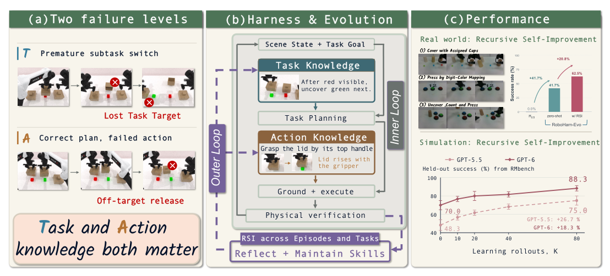
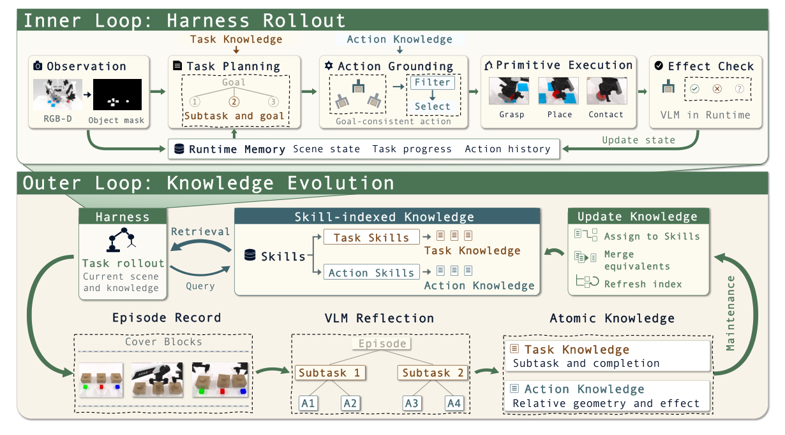

RoboHarn-Evo 深度调研笔记
速览
| 项 | 内容 |
|---|---|
| 一句话 | 双循环 harness 从物理经验中演化分层物理知识 HPK：Task Knowledge（做什么子任务、何时算完成）+ Action Knowledge（物体相对几何策略及其物理效果）——RMBench 平均 +24.2pp；80 次 rollout 后 GPT-5.5 留出集 48.3%→75.0%、GPT-6 70.0%→88.3%；知识纠错 83.3%，正确知识保留 95.8% |
| 冻结 | 基座 VLM 与低层执行器全程不动 |
| 演化 | HPK 知识条目（内容修订 + 适用性更新 + 检索组织） |
| 迁移 | 冻结 HPK 零样本 RMBench→RoboDojo：+35.0 / +25.0pp |

① 动机：局部动作成功 ≠ 任务完成
- 有序积木操作里，机器人可能没确认当前子任务完成就切下一个；也可能选对了目标却在偏移位置释放盖子——一次成功抓取能支持抓取策略，但不能证明盖子放到了预期位置。
- 核心问题：物理反馈应该在哪个决策层级修订什么知识？——两个层级要用各自的判据分别检验：任务级对"子任务完成"，动作级对"预期物理效果"。
② 架构：HPK 双层知识 + 双循环

| 层 | 内容 | 检验判据 |
|---|---|---|
| Task Knowledge | 执行哪个子任务、完成条件是什么（如"红块之后揭绿块"） | 子任务完成 |
| Action Knowledge | 物体相对几何策略 + 预期与观测到的物理效果（如"从顶部把手接近盖子，检查何种效果"） | 预期局部物理效果 |
- 内循环（执行）：按任务目标在当前场景检索 Task Knowledge（回答"做什么"）→ 子任务条件下检索 Action Knowledge（回答"怎么做"）→ 几何在当前场景 grounding，不复用存储的机器人位姿。
- 外循环（知识更新）：观测、工具调用、物理结果 → episode 记录 → reflector 抽取任务/动作条目 → 维护（合并等价、修订受质疑内容、更新技能索引）→ 只有"有支持且无相反证据"的知识才可检索。
③ 数据与结果
| 指标 | 数字 |
|---|---|
| RMBench 平均成功（HPK vs 无 HPK 同 harness） | +24.2pp |
| 80 rollouts 后留出集（知识冻结、评估反馈不更新） | GPT-5.5 48.3%→75.0%；GPT-6 70.0%→88.3% |
| 知识纠错（外部 GPT-6 审计 12 条初始错误） | 修复/停用 83.3%（GPT-6 达 91.7%） |
| 有效知识保留（24 条初始正确） | 95.8% |
| 零样本跨域迁移（RMBench→RoboDojo） | +35.0 / +25.0pp |
| 真机 | 仿真知识零样本 41.7% → 真机交互继续更新后 62.5% |
④ 信息流
执行：scene+goal → Task 检索("做什么") → 子任务 → Action 检索("怎么做")
→ 当前场景 grounding → 执行 → 记录前后观测/工具调用/物理结果
更新：reflector 抽取 Task/Action 条目 → 按各自判据检验
→ 修订/合并/停用 → 更新检索索引 → 供下一 episode
⑤ 例子
"红块之后揭绿盖"：Task Knowledge 记录顺序与"盖子完全离开绿块"的完成判据；Action Knowledge 记录"抓盖顶把手、垂直上提 5cm、检查盖下无接触"的策略与预期效果。执行中释放偏移 → 外循环修订该 Action 条目的适用条件，而不是笼统记一条"失败"。
⑥ 局限
- 知识条目质量依赖 reflector 的抽取与判据设计；
- 层级固定为两层（任务/动作），更深的层次结构未探索；
- 跨域迁移在 RoboDojo 验证，域差更大时待考。
⑦ 簇内定位
- 与 RoboFoundry：同月、同为"经验→持久系统改进"，RoboHarn-Evo 演化知识（分层判据检验），RoboFoundry 演化整个系统文件（上下文面+技能面）；
- 与 RATs/ASPIRE 的技能库：技能库存"怎么做"，HPK 额外存"怎么判断做完了"——完成判据是被此前工作忽视的一层；
- 与 HarnessBank 的门控：同源的"入库纪律"——HPK 条目要"有支持且无相反证据"才可检索；
- 它回答了 Harness VLA 留下的记忆短板（EmbodiedSkills 的 RMBench 12.5%）如何用可检验的知识演化补上。